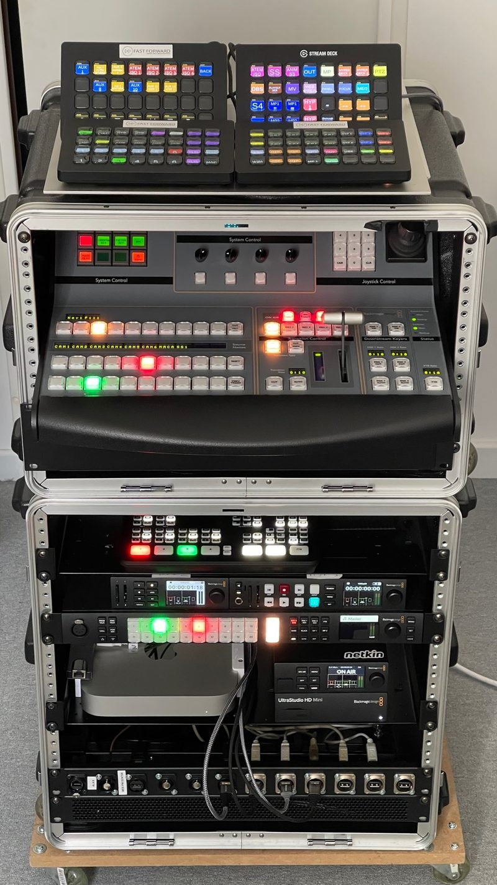

Intégration de régie vidéo et studio de streaming pour entreprises
Vous avez choisi votre matériel vidéo, ou vous êtes sur le point de l'acheter ? Fast Forward se charge de l'assembler, le câbler et le configurer pour vous livrer une installation prête à tourner. Mise en rack, câblage, paramétrage du mélangeur, des enregistreurs et de la diffusion, formation de vos équipes : nous transformons une pile de cartons en régie de streaming opérationnelle, à Paris et partout en France.

Vous achetez le matériel, nous l'intégrons
Nous ne vendons pas de matériel. Vous l'achetez auprès du revendeur de votre choix, au meilleur prix, et nous intervenons pour le mettre en œuvre. Notre rémunération porte uniquement sur notre savoir-faire : vous gardez la maîtrise de votre budget et l'assurance d'un conseil indépendant.
Pas encore fixé sur le matériel ? Notre offre de conseil en équipement vidéo vous aide à choisir la bonne configuration avant l'achat.
Notre savoir-faire : celui de nos propres régies
Les régies que nous proposons en location sont entièrement montées et précâblées par nos soins : mélangeurs Blackmagic ATEM, enregistreurs HyperDeck, encodeurs Web Presenter, Stream Decks préconfigurés, Mac intégré au mélangeur pour l'habillage graphique. Nous appliquons le même niveau d'exigence aux installations de nos clients.
Ce que nous prenons en charge
Mise en rack et câblage
Montage du matériel en rack, câblage vidéo SDI et HDMI, audio, alimentation et réseau, repérage des câbles. Votre régie devient un ensemble compact et transportable : il ne reste qu'à brancher les caméras.
Configuration et paramétrage
- Mélangeur vidéo (ATEM ou autre) : sources, multiview, incrustations, fenêtres, macros
- Enregistrement : programme et sources séparées (ISO), magnétoscopes HyperDeck
- Diffusion : paramétrage du streaming vers YouTube, Facebook Live, Twitch, Livestorm ou Microsoft Teams
- Habillage graphique en direct : intégration d'un ordinateur au mélangeur (key and fill) pour les synthés, titrages et médias
- Stream Decks : programmation des raccourcis pour accéder à toutes les fonctions en un geste
Formation et prise en main
Une installation n'est utile que si vos équipes savent s'en servir. Nous formons vos collaborateurs à l'utilisation de la régie, et nous pouvons superviser vos premiers tournages ou directs pour qu'ils gagnent en autonomie en toute sérénité.
Pour quels projets ?
- Studio vidéo interne ou plateau de webinar
- Salle de conférence équipée pour les réunions et événements hybrides
- Régie mobile en rack pour filmer vos événements sur différents sites
- Mise à niveau d'une installation existante
Questions fréquentes
Faut-il acheter le matériel chez un revendeur particulier ?
Non, vous êtes libre de l'acheter où vous voulez. Si vous le souhaitez, nous validons votre liste avant l'achat pour éviter les incompatibilités.
Pouvez-vous intégrer du matériel que nous possédons déjà ?
Oui. Nous partons de votre équipement existant et le complétons si nécessaire.
Intervenez-vous en dehors de Paris ?
Oui, nous intervenons sur tout le territoire français.
Combien coûte une intégration ?
Le tarif dépend de la taille de l'installation, du câblage nécessaire et de la formation souhaitée. Contactez-nous pour un devis gratuit.